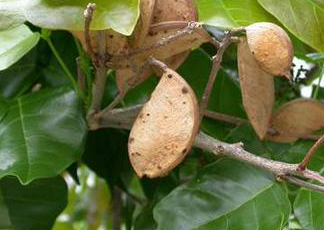

Specie: Pongamia pinnata
Taxonomy: Fabaceae; Papilionoideae; 50 kb inversion clade; NPAAA clade; indigoferoid/millettioid clade; Millettieae; Pongamia
Abbr: Ppi
Level: Chromosome
chromosome number: 2n=2X=22

Introduction: Millettia pinnata is a legume tree that grows to about 15–25 m (50–80 ft) in height with a large canopy that spreads equally wide. It may be deciduous for short periods. It has a straight or crooked trunk, 50–80 cm (20–30 in) in diameter, with grey-brown bark, which is smooth or vertically fissured. Its wood is white colored. Branches are glabrous with pale stipulate scars. The imparipinnate leaves of the tree alternate and are short-stalked, rounded, or cuneate at the base, ovate or oblong along the length, obtuse-acuminate at the apex, and not toothed on the edges. They are a soft, shiny burgundy when young, and mature to a glossy, deep green as the season progresses, with prominent veins underneath. Flowering generally starts after 3–4 years with small clusters of white, purple, and pink flowers blossoming throughout the year. The raceme-like inflorescences bear two to four flowers that are strongly fragrant and grow to be 15–18 mm (0.59–0.71 in) long. The calyx of the flowers is bell-shaped and truncated, while the corolla is a rounded ovate shape with basal auricles and often with a central blotch of green color. Croppings of indehiscent pods can occur by 4–6 years. The brown seed pods appear immediately after flowering, and mature in 10 to 11 months. The pods are thick-walled, smooth, somewhat flattened, and elliptical, but slightly curved with a short, curved point. The pods contain within them one or two bean-like brownish-red seeds, but because they do not split open naturally, the pods need to decompose before the seeds can germinate. The seeds are about 1.5–2.5 cm (0.59–0.98 in) long with a brittle, oily coat, and are unpalatable in natural form to herbivores. The species is naturally distributed in tropical and temperate Asia, from India to Japan to Thailand to Malesia to north and north-eastern Australia to some Pacific islands; It has been propagated and distributed further around the world in humid and subtropical environments from sea level to 1,360 m (Chingola, Zambia), although in the Himalayan foothills, it is not found above 600 m.[ Withstanding temperatures slightly below 0 °C (32 °F) and up to about 50 °C (122 °F) and annual rainfall of 500–2,500 mm (20–98 in), the tree grows wild on sandy and rocky soils, including oolitic limestone, and will grow in most soil types, even with its roots in salt water.[ The tree is well suited to intense heat and sunlight, and its dense network of lateral roots and its thick, long taproot make it drought tolerant. The dense shade it provides slows the evaporation of surface water and its root nodules promote nitrogen fixation, a symbiotic process by which gaseous nitrogen (N2) from the air is converted into ammonium (NH4+, a form of nitrogen available to the plant). M. pinnata is also a freshwater flooded forest species, as it can survive total submergence in water for few months continuously. M. pinnata trees are common in Tonlesap lake swamp forests in Cambodia. [citation need Millettia pinnata is an outbreeding diploid legume tree, with a diploid chromosome number of 22. [ Root nodules are of the determinate type (as those on soybean and common bean) formed by the causative bacterium Bradyrhizobium. trad
Distribution: Andaman Is., Assam, Bangladesh, Bismarck Archipelago, Borneo, Caroline Is., China Southeast, Christmas I., East Himalaya, Fiji, Hainan, India, Japan, Jawa, Lesser Sunda Is., Malaya, Marianas, Myanmar, Nansei-shoto, New Caledonia, New Guinea, Nicobar Is., Northern Territory, Pakistan, Philippines, Queensland, Samoa, Sri Lanka, Sumatera, Taiwan, Thailand, Vanuatu, Vietnam, Wallis-Futuna Is., West Himalaya
Article Title: Evolution of coastal forests based on a full set of mangrove genomes
Data source: The sequences of this study have been deposited in National Genomics Data Center (NGDC), China National Center for Bioinformation. The 48 genome assembly sequences have been deposited in the Genome Warehouse (https://ngdc.cncb.ac.cn/gwh) in NGDC, under BioProject ID PRJCA004930. Detailed accession numbers of assemblies are listed in Supplementary Table 1. RNA-seq data from multiple species have been deposited in the Genome Sequence Archive (https://ngdc.cncb.ac.cn/gsa) in NGDC, under accession number CRA004363 with BioProject ID PRJCA005451. The genomic and RNA sequences were also deposited in National Center for Biotechnology Information under BioProject ID PRJNA817364.